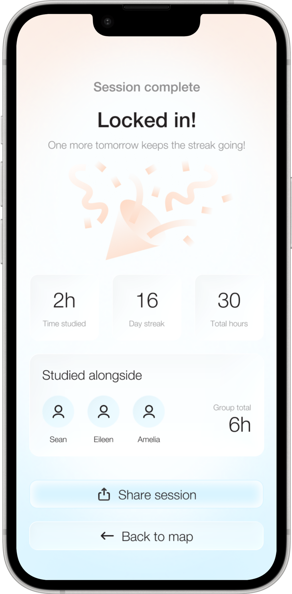

Sessions is a study app for college students. It shows friends' study sessions on a campus map, so you can see who is studying and join them.
Many students go to the library at night because it is easier to start working when people nearby are working too. Study apps give each of them a private timer and a streak counter.
I asked classmates where they study, who they study with, and what gets them to show up.
Classmates picked a library or café because of who would be there.
Everyone I asked had dropped a streak in some app, and none of them remembered a friend noticing.
Study plans made over text often fell apart. Joining a session that had already started was easy.
My first ideas were about helping one person focus for longer, and they looked like apps that already exist. I changed the question to what happens when friends can see each other's timers.
Before
"Focus for 25 minutes."
A timer only you can see
After
"7 friends studying now."
A session other people can see and join
Showing study sessions to friends meant deciding who sees a session and whose hours count.
You choose on the timer screen before the session starts.
Weekly challenges and the end screen add up the time of everyone who studied together.
I mapped the whole app as one flow before designing screens. The map showed I had not designed what a session looks like to people outside it.

The type is Helvetica Neue and the surfaces are frosted glass in soft blues, close to iOS, so the app feels familiar from the first open.


Setup asks for your subjects, when you study, how you like to study, and whether you study in person or remotely. Session suggestions use these answers.

A session starts with a name for what you are studying. The name then sits at the top of the timer.


Choose public or private, then turn the dial to set the length. While it runs, the timer shows the time, how many people are studying alongside you, and a pause button.

The end screen shows how long you studied, your streak, your total hours, and the friends who studied with you.

The map shows where friends are studying and how long they have left. Group sessions show how many people are in them and have a Join button.


From the friends list, Add Friends lets you search by name, share an invite link, or add people suggested through mutual friends.

A weekly challenge gives a group one goal, 10 hours here, and shows how much each member has added.

History shows your total hours, a chart of the week, and each past session with its subject, place and length.

Missing a day ends the streak. The screen shows the old streak, the new one starting at zero, and a way to rebuild it by studying three sessions in three days.

Seeing that friends are studying right now is the core of the app. The counters and notifications support it.
The hardest decisions were about what to leave off the timer and how to handle a broken streak.
Next I would design the map for quiet hours, showing where people study at different times of day and which friends are about to finish.